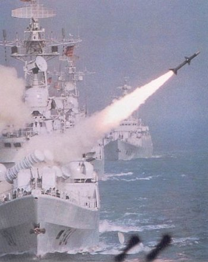
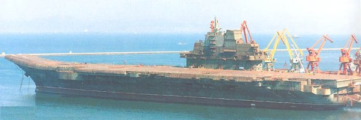
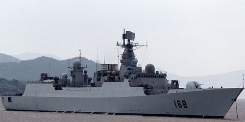
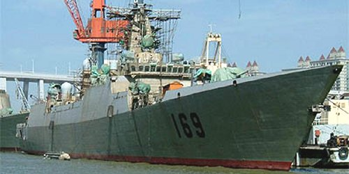
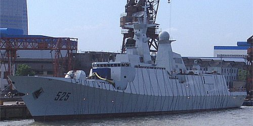
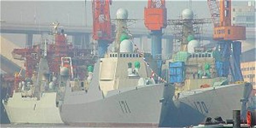

|
 THE RISING SEA DRAGON IN ASIA - 2004 UPDATE By Jeff Head - Last Update: JAnuary 26, 2013 |
 |
              
 In the 1990's the People's Republic of China embarked on an unprecedented military buildup to modernize their armed forces, increase their qualitative functioning and put them in a position to be able to better carry out the geo-political dictates of the Red Chinese government. This necessarily includes being able to develop themselves to a point that they could credibly confront the other armed forces in the region who may stand in the way of those geo-political directives, in particularly the United States. The buildup has covered the spectrum of military forces, from strategic rocket forces (ICBM's), tactical rocket forces (SRBM's), ground forces, air forces and naval forces. It is being accomplished with monies that would otherwise have bankrupted the earlier marxist and maoist market economies, and also been done while maintaining their communistic/marxistis political heiarchy. Capitalizing on the low cost labor force that they have opened up to the western world, the Red Chinese are obtaining the influx of capital necessary to maintian their military buildup. They are also making adept application of Sun Tsu philosophy (where makes clear that all warfare is deception) to amass staggering western trade defficits (meaning the west is on the deficit end) which are reaping them the tremendous capital and technological capabilities to continue on and achieve their military goals. In conjucntion with the capital gains, through research and development, blackmail, importation of dual use technologies, bribery and out and out espionage, the Red Chinese have also markedly increased their technological and qualitative capabilities many fold over the last several years. This has allowed them to rise from a point in the early to mid 1990's where they were 25-30 years behind US technology, to a point today (less than fifteen years later) where their newer systems are challenging American capabilities in some areas, and posing a credible threat in others. While not an exhaustive study, the focus of this article is to examine and present the recent developments in the Chinese Navy (PLAN) which are putting them into a position to credibly challenge the United States Navy in the region. The Chinese Navy has historically been without any sea-based naval air component. Like the Soviets before them, they have historically relied heavily on land based naval strike aircraft to attack and defeat opposing at-sea naval forces in the region. They have had no aircraft carriers. However, also like the Soviets before them, the Chinese have come to see the desirability and necessity of developing sea-based naval air forces if they plan to project power very far from their own shores. In recognition of this, over the last ten years, they have purchased and studied at least three different carrier designs. These ships have been acquired through various strategies including purchasing them for scrap and then bringing them to Chinese naval yards for study, and purchasing them for supposed economic reasons, like making a floating casino out of a former Russian carrier, and then again bringing it to China for study. The two carriers bought for scrap are not suitable for refitting and making operational, but they would have provided Chinese shipbuilders and designers with invaluable knowledge so they can augment their own future naval plans. The latest carrier obtained in this fashion is the most revealing as to PLAN intent. It is the former Russian carrier, the Varyag. The Varyag is a modern design (newer than the initial ship of the Russian class, the Kuznetzov, which is currently operational with the russian fleet) and could be become a very capable intial foray into the carrier world by the PLAN. It was towed to the Dalian Chinese naval yards where it is currently being studied for anything but a floating Casino. Given the Chinese capital capabilities, it could be refitted and made sea worthy (it was towed at sea from the Black Sea to China) or it could provide the technical basis for a wholly indigenous Chinese carrier.  The Vayrag being towed through the Bosporus en route to Chinese waters
 The Vayrag birthed at the Dalian Chinese naval shipyards The Vayrag is not something to be taken lightly. Fully equiped it would approach a 65,000 ton displacement and embark 40-50 modern jet fighter and attack aircraft. As such, it would be the equal (it is in fact a newer design) to the Russian Kuznetzov and would be the largest carrier in the world outside of America's super-carriers. Operating within range of ground air support and with the appropriate escort vessels, it would pose a credable threat in the China Sea and particularly in the Formosa Straits. The Chinese have been purchasing, and are now license building, SU-27 fighter bombers in China which could be used on the Vayrag and their new J-10 aircraft might also be suitably modified for carrier operations. If the Chinese were to complete this carrier and then augment it with designs of their own to the point where they were producing several of them, the balance of power in the region would shift dramitically.  Red Chinese produced SU-27 Aircraft (Chinese designate J11)
But do the Chinese intend to do this? That question can be answered by determining if the Chinese are developing and fielding the necessary escort and support vessels and infrastructure to protect and augment any carrier they develop. The answer to that questions is an umittigated, yes! The Chinese have embarked on an ambitious and unprecedented development and ship building program of modern destroyers and frigates that would allow for the creation of powerful carrier battle groups similar to those fielded by the U.S. Navy once they produce a carrier. These include multi-role combat vessels, area air-defense vessels (similar to American Aegis vessels) and support vessels. They have also purchased very capable, modern large surface combatants from the Russians. The Sovermenny class destroyers were produced by the Soviets in the late 1980's to specifcally threaten U.S. carriers. The Chinese have purchased four of these vessels and refitted and renamed them the Hangzhou class. The Russians modernized the design throughout the 1990's before their sale to the Chinese and they are an example of the type of equipment the Chinese are purchasing with their new found wealth and technology (mostly ammassed from trade with the United States and other western countries). These ships are very capable, mulit-purpose guided missile destroyers and carry the Sunburn and Yahkont surface to surface missiles which were specifically designed by the Russians to attack U.S. super-carriers and defeat the Aegis air defense system. These vessels aslo have a credible medium-ranged anti-air defense system suitable for their own protection, or close in protection of other vessels.  A former Sovremmenny class now sailing as the PLAN Hangzhou To augment the multi-role capabilities of the Hangzhou class, the Chinese have done a very thorough job of development themselves, producing their own modern designs. This started in the 1990's with modernization of the numerous, but older, Luda class of destroyers. It then proceeded to the development of the newer Luhu class desroyers in the mid-1990's and the evolution of that class into the newer and more capable Luhai class by the late 1990's. It is now finally producing their new Typr 52B, Guangzhou class of vessels. With a displacemnt approaching 7,000+ tons and modern anti-surface, anti-air and anti-submarine weapons systems and using proven Russian Top Dome and other acquisition and targeting sensors, this design represents a modern Chinese version of the Russian Svremmenny and indicates the Chinese commitment to being self-sufficient in their naval development and power projection capabilities. This is a very capable design and cannot be taken lightly by U.S. war planners. Currently the Chinese have launched two of these newer vessels and are projected to build up to eight of them.  The new PLAN 168 Guanghou destroyer
 The second Guanghou destroyer being built In addition, the Chinese are developing a new, stealthy Type 54, Maanshan class frigate that will be capable in the anti-air, anti-surface and anti-submarine roles. In addition they are developing a smaller, stealthy, fast attack craft in an apparent attempt to beat the Americans to the Littoral Combat Ship (LCS) role, these new frigates and fast attack craft are already being built and launched in Chinese shipyards.  The new 525 Maanshan PLAN Frigate, launched, interestingly enough, on 9/11/2003. In order to provide the area air coverage necessary to protect a carrier in the modern war-at-sea environment, the Chinese have also embarked on the very ambitious task of developing, building, and launching modern area air-defense destroyers. These ships are similar in design and function to the American AEGIS Burke destroyers that are used to protect large task forces, particularly carrier battle groups from mass air assault by aircraft or missiles. Captializing on joint exercises and partnership programs with the United States Navy in the 1990's. where Red Chinese officers were actually allowed onboard American Aegis ships to observe their operations, and relying on technology that has been obtained through dual technology methods, espionage and the rising capabilities of Chinese researchers themselves (who are very well funded), the Chinese are now also building this new class of area air-defense destroyer, the Type 52C, Lanzhou guided missile destroyer. These vessels will employ Phased Array radar acquisition and targeting systems similar to Aegis and their own long-range, vertical launch missiles. These vessels are meant to be the equivalent of the U.S. Navy's Arleigh Burk class destroyers. Two are currently being built simultaneously and it is expected that the Chinese will build at least two more, while developing an even larger and more capable class of vessels which may be intended to rival the vaunted American Ticonderoga class Aegis cruisers.  Two new Type 52C, Lanzhou AEGIS-like destroyers nearing completion As these ships are produced in numbers and as the Chinese continue with their carrier development plans towards ultimately lauching their own, the balance of power in the China Sea and western Pacific is going to hang in the balance. While the Chinese experience level with this equipment is lacking and will be very much inferior to the decades and decades of practical experience the United States Navy has, there is no doubt that the Chinese are embarked on a path to challenge that experience and heretofore dominance of the U.S. Navy in the region at some point. If within range of large numbers of land-based aircraft and missiles, and if coupled with modern, capable weapons systems like the Sunburn or Yahkont missiles and perhaps supercavitiating torpedo technology, a credible threat to American naval supremecy in the western Pacific could be posed in the next few years. It bears watching and serious consideration. While doing so, consider this: The Chinese are currently building and launching six or seven modern, entire classes of major combatant vessels (two of which are new attack and strategic missile submarines)...simultaneously. This is a monumental achievement and compares to the United States Navy which is currently building and launching three new classes of major combatants (the Virginia class subs, the San Antonio class LPDs, and the continuing Burk class destroyers) with plans for two to three more U.S. classes in the future Clearly the Chinese and the PLAN are serious about their future naval capabilities in the China Sea and western Pacific. There can only be one naval power that they intend to, and must, confront if confrontation over geo-political policy comes into play...and that is the U.S. Navy. Such tremendous development, building and launching of vessels indicate that they intend to do just that and their intentions, capabilities and funding in this regard cannot be underestimated. | ||

Copyright © 2005-2012 by Jeff Head
JEFFHEAD.COM Hit Counter
Jeff Head's Naval Sites Hit Counter
|